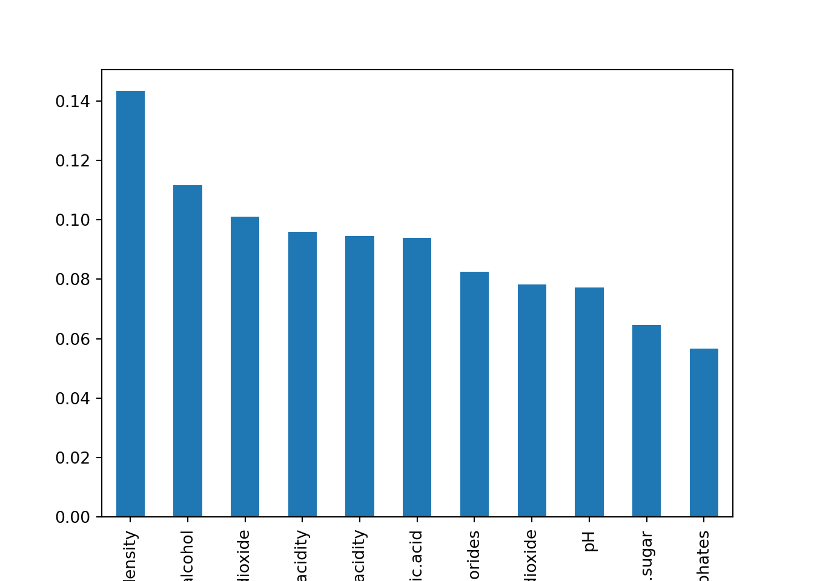
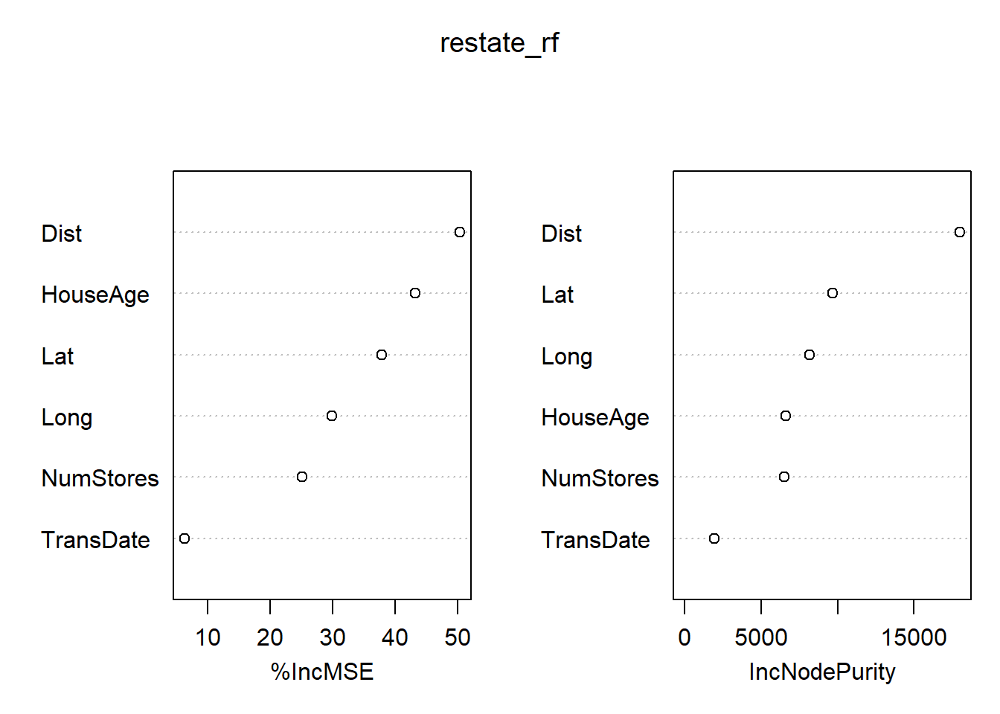

library(randomForest)
wine <- read.csv(here::here("labs/data/Wine.csv"))
wine$quality <- as.factor(wine$quality)
# define a function to get the splitting index (training and testing) of a given dataset
get_split_index <- function(dataset, train_proportion = 0.75) {
set.seed(123)
index <-
sample(
x = 1:2,
size = nrow(dataset),
replace = TRUE,
prob = c(train_proportion, 1 - train_proportion)
)
return(index)
}
wine_index <- get_split_index(wine)
wine_tr <- wine[wine_index == 1, ]
wine_te <- wine[wine_index == 2, ]Ensemble Methods
Random Forest
In this part of the lab, we will look at how the randomForest library (alternative to ranger) can be applied for classification and regression tasks. At the very end, please feel free to apply these techniques to one of your favorite datasets seen in class (classification or regression).
NoteHyperparameters of RF
R (using the randomForest library):
-
ntree: The number of trees in the forest (equivalent ton_estimatorsin python). -
mtry: The number of features to consider when looking for the best split. (similar tomax_featuresin python) -
max.depth: The maximum depth of each tree. -
nodesize: The minimum number of samples required to split an internal node (equivalent tomin_samples_splitin python).
Python (using the sklearn library):
-
n_estimators: The number of trees in the forest. -
max_features: The number of features to consider when looking for the best split. -
max_depth: The maximum depth of each tree. -
min_samples_split: The minimum number of samples required to split an internal node. -
min_samples_leaf: The minimum number of samples required to be at a leaf node.
TipFew tips on RF hyperparameters
A few (among many) tips for finding the ideal hyperparameters for RF:
-
ntree(R) /n_estimators(python): Use a large number of trees in the forest to improve model performance, but be aware of the increased computation time. The default value is usually a good starting point. -
mtry(R) /max_features(python): Experiment with different values, usually starting with the default (square root of the number of features for classification or one-third of the number of features for regression). Increasing this value may improve model performance but can also increase computation time. -
max.depth: Control the depth of each tree to manage overfitting. Deeper trees capture more complex patterns but can lead to overfitting. Experiment with different values, keeping in mind that a shallower tree can be more interpretable and less prone to overfitting. -
nodesize(R) /min_samples_split(python): Increasing this value can help reduce overfitting, but setting it too high might lead to underfitting. Experiment with different values to find the optimal balance.
Classification
Data preparation for Random Forest
Load the library randomForest in R. Then, load the wine data set. This dataset is about white wine quality (in fact Portuguese vinho verde). The data contains 11 numerical features and 1 factor variable:
fixed.acidityvolatile.aciditycitric.acidresidual.sugarchloridesfree.sulfur.dioxidetotal.sulfur.dioxidedensitypHsulphatesalcoholquality: Good/Bad
All the numerical features have units. The data source can be found here. For simplicity, only an extraction of 200 wines are used in this exercise. Note that in the original data set, the quality is a score (0 to 10) that was turned as factor here for the exercise (Bad: 0 to 5, Good: 6 to 10). Also, note that in the data source, the objective is to predict the quality from the other features (supervised learning).
As mentioned, the outcome variable used for this dataset is the wine quality. We should first coerce the classes as factors. Then, we make the training/test set random split with a 75/25 scheme.
# Load the course python environment as usual with a r code chunks.
library(reticulate)
use_condaenv("MLBA")Similar to the previous labs, in python, we can use the usual sklearn library to do all our modelling. Please note that we will load the data again in python to make the demo easier. Additionally, we’ll load all the necessary libraries for this lab in this code chunk.
import pandas as pd
import numpy as np
from sklearn.model_selection import train_test_split
from sklearn.ensemble import RandomForestClassifier, RandomForestRegressor
from sklearn.metrics import confusion_matrix, accuracy_score, mean_squared_error
import matplotlib.pyplot as plt
import seaborn as sns
# we first move up one directory to achieve relative paths
wine = pd.read_csv('../data/Wine.csv')
wine['quality'] = wine['quality'].astype('category')
# Split wine dataset into train and test
train_wine, test_wine = train_test_split(wine, test_size=0.25, random_state=123)Note: Here, we have written a function to make the split as we will also need to apply it also for another dataset in the regression part.
Training and testing the model
Fit a random forest on the train set. The target is the taste variable that we want to predict. Specify for the number of trees ntree=1000 (by default, the function selects \(500\) trees). Remember to exclude quality in the predictors of the formula. Also, use the option importance=TRUE, we will need it afterward. Then test the model by computing the accuracy on the test set. You may use confusionMatrix from caret.
Confusion Matrix and Statistics
Reference
Prediction Bad Good
Bad 14 2
Good 4 27
Accuracy : 0.8723
95% CI : (0.7426, 0.9517)
No Information Rate : 0.617
P-Value [Acc > NIR] : 0.0001095
Kappa : 0.7241
Mcnemar's Test P-Value : 0.6830914
Sensitivity : 0.7778
Specificity : 0.9310
Pos Pred Value : 0.8750
Neg Pred Value : 0.8710
Prevalence : 0.3830
Detection Rate : 0.2979
Detection Prevalence : 0.3404
Balanced Accuracy : 0.8544
'Positive' Class : Bad
# Fit a Random Forest classifier on the train set
wine_rf = RandomForestClassifier(n_estimators=1000, random_state=123)
wine_rf.fit(train_wine.drop('quality', axis=1), train_wine['quality']);
# Test the model and compute the accuracy
wine_pred_rf = wine_rf.predict(test_wine.drop('quality', axis=1))
print(confusion_matrix(test_wine['quality'], wine_pred_rf))
print("Accuracy:", accuracy_score(test_wine['quality'], wine_pred_rf))[[ 8 11]
[ 4 27]]
Accuracy: 0.7This model is worse than the R version mostly because of the different defaults.
Variable importance
Extract the model-specific variable importance using the functions varImpPlot (plots) and importance (values) on the model. Observe well that the mean decrease in accuracy of each variable is also computed for each specific class. In particular, what makes density special for predicting Good compare to another variable (like for example citric.acid)?
varImpPlot(wine_rf)
importance(wine_rf) Bad Good MeanDecreaseAccuracy
fixed.acidity 1.7645647 1.6963176 2.174369
volatile.acidity 7.4926690 9.9147011 11.973911
citric.acid 2.2189837 1.1806016 2.280999
residual.sugar -8.8424835 3.9274692 -2.590136
chlorides 6.4857349 7.2239580 9.225750
free.sulfur.dioxide -0.9260418 -1.8829874 -2.157540
total.sulfur.dioxide 4.7433224 -0.2384122 2.881924
density 7.1431021 11.3812260 14.377246
pH 3.1878102 -0.7759402 1.332625
sulphates -4.6833596 -2.9489905 -5.037185
alcohol 3.5989939 12.0743037 12.725844
MeanDecreaseGini
fixed.acidity 6.125187
volatile.acidity 7.478968
citric.acid 5.645807
residual.sugar 4.560324
chlorides 6.933281
free.sulfur.dioxide 5.321214
total.sulfur.dioxide 6.707716
density 8.105926
pH 5.564026
sulphates 3.811083
alcohol 7.251173# Variable importance
wine_importances = pd.Series(wine_rf.feature_importances_, index=train_wine.drop('quality', axis=1).columns)
wine_importances.sort_values(ascending=False).plot(kind='bar');
density is important for predicting the Good since their predictions is much less accurate if we do not use it. citric.acid is both overall less important than density but especially for prediction of Good.
Regression
In this part, we will be using the real_estate_data.csv once again. After reading the data, apply a random forest to predict price using all the other variables except No, Month and Year. Compute the RMSE and inspect the prediction quality with a graph. Note that the importance is not specific to any class here.
library(dplyr)
library(magrittr)
real_estate_data <- read.csv(here::here("labs/data/real_estate_data.csv"))
# select the columns of interest
real_estate_data <-
real_estate_data %>%
select(-c(No, Month, Year))
# once again, divide the data into training and testing sets using the function created earlier
restate_index <- get_split_index(real_estate_data)
restate_tr <- real_estate_data[restate_index == 1, ]
restate_te <- real_estate_data[restate_index == 2, ]
# apply the RF model as a regression
restate_rf <- randomForest(Price~., data=restate_tr, ntree=1000, importance=TRUE)
restate.pred_rf<-predict(restate_rf, newdata=restate_te)
# compute rmse and plot the results as well the VarImp
(rmse <- sqrt(mean((restate_te$Price - restate.pred_rf)^2)))
plot(restate_te$Price ~ restate.pred_rf)
abline(0,1)
varImpPlot(restate_rf)
importance(restate_rf)[1] 9.264339
%IncMSE IncNodePurity
TransDate 6.30166 1959.652
HouseAge 43.14229 6611.313
Dist 50.34490 18004.566
NumStores 25.13086 6510.080
Lat 37.82308 9688.555
Long 29.81149 8173.946# Load real estate dataset
real_estate_data = pd.read_csv("../data/real_estate_data.csv")
real_estate_data = real_estate_data.drop(['No', 'Month', 'Year'], axis=1)
# Split real estate dataset into train and test
train_restate, test_restate = train_test_split(real_estate_data, test_size=0.25, random_state=123)
# Fit a Random Forest regressor on the train set
restate_rf = RandomForestRegressor(n_estimators=1000, random_state=123)
restate_rf.fit(train_restate.drop('Price', axis=1), train_restate['Price']);
# Test the model and compute the RMSE
restate_pred_rf = restate_rf.predict(test_restate.drop('Price', axis=1))
rmse = np.sqrt(mean_squared_error(test_restate['Price'], restate_pred_rf))
print("RMSE:", rmse)
# Plot the prediction quality
plt.scatter(test_restate['Price'], restate_pred_rf);
plt.xlabel('Actual Price');
plt.ylabel('Predicted Price');
plt.plot([min(test_restate['Price']), max(test_restate['Price'])], [min(test_restate['Price']), max(test_restate['Price'])], color='red');
plt.show()
# Variable importance
restate_importances = pd.Series(restate_rf.feature_importances_, index=train_restate.drop('Price', axis=1).columns)
restate_importances.sort_values(ascending=False).plot(kind='bar');RMSE: 6.537435455050313

Compare this model with the one you came up with in Ex_ML_LinLogReg . Which one would you go for?
Gradient Boosting Machines (GBM)
In this part of the lab, we will look at how the gbm library in R and the GradientBoostingClassifier and GradientBoostingRegressor in Python can be applied for classification and regression tasks. We will continue using the wine dataset for classification and real_estate_data for regression.
NoteHyperparameters of GBM
R (using the gbm library):
-
n.trees: The number of boosting stages to perform (equivalent ton_estimatorsin python). -
interaction.depth: The maximum depth of each tree (equivalent tomax_depthin python). -
shrinkage: The learning rate. -
n.minobsinnode: The minimum number of samples required to split an internal node (equivalent tomin_samples_splitin python). -
bag.fraction: The fraction of samples to be used for fitting individual base learners (equivalent tosubsamplein python).
Python (using the sklearn library):
-
n_estimators: The number of boosting stages to perform. Similar to Random Forest, increasing the number of estimators can improve the model’s performance but may also increase the computational complexity and training time. -
learning_rate: The learning rate shrinks the contribution of each tree. A smaller learning rate requires more boosting stages to achieve the same performance as a larger learning rate, but it can also result in a more robust model. -
max_depth: The maximum depth of each tree. Similar to Random Forest, a higher depth can capture more complex patterns in the data, but it may also lead to overfitting. -
min_samples_split: The minimum number of samples required to split an internal node. Similar to Random Forest, a smaller value allows the model to capture finer details in the data, while a larger value can help prevent overfitting. -
min_samples_leaf: The minimum number of samples required to be at a leaf node. Similar to Random Forest, a smaller value allows the model to capture finer details, while a larger value can help prevent overfitting. -
subsample: The fraction of samples to be used for fitting individual base learners. A value smaller than 1.0 can lead to a reduction in variance and an increase in bias, resulting in a more robust model.
TipFew tips on GBM hyperparameters
Similar to R, here are some tips for finding the best combination of the hyperparameters:
-
n.trees(R) /n_estimators(python): Start with a lower number of trees and increase it until no further improvement in performance is observed. Be aware of the increased computation time with a larger number of trees. -
interaction.depth(R) /max_depth(python): Keep the depth of each tree relatively shallow (3-5 levels) to prevent overfitting. Deeper trees can capture more complex patterns but may lead to overfitting. -
shrinkage(R) /learning_rate(python): Use a smaller learning rate for better model performance, but be prepared for slower convergence and increased computation time. Typically, values range between 0.01 and 0.1. -
n.minobsinnode(R) /min_samples_split(python): Similar to Random Forest, experiment with different values to find the optimal balance between overfitting and underfitting. -
bag.fraction(R) /subsample(python): Using a subsample of the data (e.g., 0.5-0.8) can help reduce overfitting and speed up the training process. Experiment with different values to find the best trade-off between performance and computation time.
Classification
Training and testing the model
We now fit a GBM model on the wine training set and apply it to the same target variable quality. We can train the model and add
library(gbm)
set.seed(123)
wine_gbm <- gbm(quality~., data=wine_tr, distribution="multinomial", n.trees=1000, interaction.depth=4, shrinkage=0.01)
wine.pred_gbm <- predict(wine_gbm, newdata=wine_te, n.trees=1000, type="response")
wine.pred_gbm_class <- apply(wine.pred_gbm, 1, which.max)
levels(wine_te$quality) <- 1:length(levels(wine_te$quality))
confusionMatrix(factor(wine.pred_gbm_class), wine_te$quality)Confusion Matrix and Statistics
Reference
Prediction 1 2
1 11 4
2 7 25
Accuracy : 0.766
95% CI : (0.6197, 0.877)
No Information Rate : 0.617
P-Value [Acc > NIR] : 0.02289
Kappa : 0.4886
Mcnemar's Test P-Value : 0.54649
Sensitivity : 0.6111
Specificity : 0.8621
Pos Pred Value : 0.7333
Neg Pred Value : 0.7812
Prevalence : 0.3830
Detection Rate : 0.2340
Detection Prevalence : 0.3191
Balanced Accuracy : 0.7366
'Positive' Class : 1
from sklearn.ensemble import GradientBoostingClassifier
# Fit a Gradient Boosting classifier on the train set
wine_gbm = GradientBoostingClassifier(n_estimators=1000, learning_rate=0.01, max_depth=4, random_state=123)
wine_gbm.fit(train_wine.drop('quality', axis=1), train_wine['quality']);
# Test the model and compute the accuracy
wine_pred_gbm = wine_gbm.predict(test_wine.drop('quality', axis=1))
print(confusion_matrix(test_wine['quality'], wine_pred_gbm))
print("Accuracy:", accuracy_score(test_wine['quality'], wine_pred_gbm))[[11 8]
[ 7 24]]
Accuracy: 0.7Regression
In this part, we will continue using the real_estate_data.csv. Fit a GBM model on the real estate training set to predict price using all the other variables except No, Month, and Year. Then compute the metrics and plot the predictions.
set.seed(123)
restate_gbm <- gbm(Price~., data=restate_tr, distribution="gaussian", n.trees=1000, interaction.depth=4, shrinkage=0.01)
restate.pred_gbm<-predict(restate_gbm, newdata=restate_te, n.trees=1000)
# compute rmse and plot the results
(rmse_gbm <- sqrt(mean((restate_te$Price - restate.pred_gbm)^2)))
plot(restate_te$Price ~ restate.pred_gbm)
abline(0,1)
[1] 9.323454# run the code below if you have not cleared the plot yet
plt.clf()
from sklearn.ensemble import GradientBoostingRegressor
# Fit a Gradient Boosting regressor on the train set
restate_gbm = GradientBoostingRegressor(n_estimators=1000, learning_rate=0.01, max_depth=4, random_state=123)
restate_gbm.fit(train_restate.drop('Price', axis=1), train_restate['Price']);
# Test the model and compute the RMSE
restate_pred_gbm = restate_gbm.predict(test_restate.drop('Price', axis=1))
rmse_gbm = np.sqrt(mean_squared_error(test_restate['Price'], restate_pred_gbm))
print("RMSE:", rmse_gbm)
# Plot the prediction quality
plt.scatter(test_restate['Price'], restate_pred_gbm);
plt.xlabel('Actual Price');
plt.ylabel('Predicted Price');
plt.plot([min(test_restate['Price']), max(test_restate['Price'])], [min(test_restate['Price']), max(test_restate['Price'])], color='red');
plt.show()RMSE: 8.071049830151864
Compare the GBM model with the Random Forest model you came up with earlier. Which one would you go for?
Bonus: XGBoost
What is XGBoost?
XGBoost (Extreme Gradient Boosting) is an optimized implementation of the gradient boosting algorithm. It is designed for high performance and efficient memory usage. XGBoost improves upon the base Gradient Boosting Machine (GBM) by incorporating regularization to prevent overfitting and implementing parallel processing techniques for faster training. The algorithm also offers built-in cross-validation and early stopping to save time and resources during model training.
Modelling with XGBoost
We’ll use the xgboost library in both R and python. You can see some of the hyperparameters below:
NoteHyperparameters of XGBoost
-
eta: Controls the learning rate, which determines the step size at each iteration while updating the model weights. Smaller values make the model more robust to overfitting but require more iterations to converge. Typical values range from 0.01 to 0.3. -
max_depth: Controls the maximum depth of each tree. Deeper trees can model more complex relationships but are more prone to overfitting. Experiment with different values, keeping in mind that a shallower tree can be more interpretable and less prone to overfitting. -
min_child_weight: Controls the minimum sum of instance weights needed in a child node. Increasing this value helps to prevent overfitting by making the model more conservative.
You can read more about the package in its documentation.
# Install and load the package
# install.packages("xgboost")
library(xgboost)
# Prepare data for XGBoost
dtrain <- xgb.DMatrix(data = as.matrix(restate_tr[, -ncol(restate_tr)]), label = restate_tr$Price)
dtest <- xgb.DMatrix(data = as.matrix(restate_te[, -ncol(restate_te)]), label = restate_te$Price)
# Set hyperparameters
params <- list(
objective = "reg:squarederror",
eta = 0.1,
max_depth = 5,
min_child_weight = 1,
subsample = 1,
colsample_bytree = 1
)
# Train the model
xgb_model <- xgb.train(params, dtrain, nrounds = 1000)
# Test the model and compute the RMSE
restate_pred_xgb <- predict(xgb_model, dtest)
rmse_xgb <- sqrt(mean((restate_te$Price - restate_pred_xgb)^2))
print(paste("RMSE:", rmse_xgb))[1] "RMSE: 9.68432363617636"We used the python installation of xgboost from our lab setup.
# Install and load the package
import xgboost as xgb
# Prepare data for XGBoost
dtrain = xgb.DMatrix(train_restate.drop("Price", axis=1), label=train_restate["Price"])
dtest = xgb.DMatrix(test_restate.drop("Price", axis=1), label=test_restate["Price"])
# Set hyperparameters
params = {
"objective": "reg:squarederror",
"eta": 0.1,
"max_depth": 3,
"min_child_weight": 1,
"subsample": 1,
"colsample_bytree": 1,
}
# Train the model
xgb_model = xgb.train(params, dtrain, num_boost_round=1000)
# Test the model and compute the RMSE
restate_pred_xgb = xgb_model.predict(dtest)
rmse_xgb = np.sqrt(mean_squared_error(test_restate["Price"], restate_pred_xgb))
print("RMSE:", rmse_xgb)RMSE: 7.116154644430258Although initially our GBM suffered compared to the RF, we can see that XGBoost can help improve the result (the case for the python implementation). However, random forest still outperforms all the other models.
Feel free to apply XGBoost to the dataset of your choice.